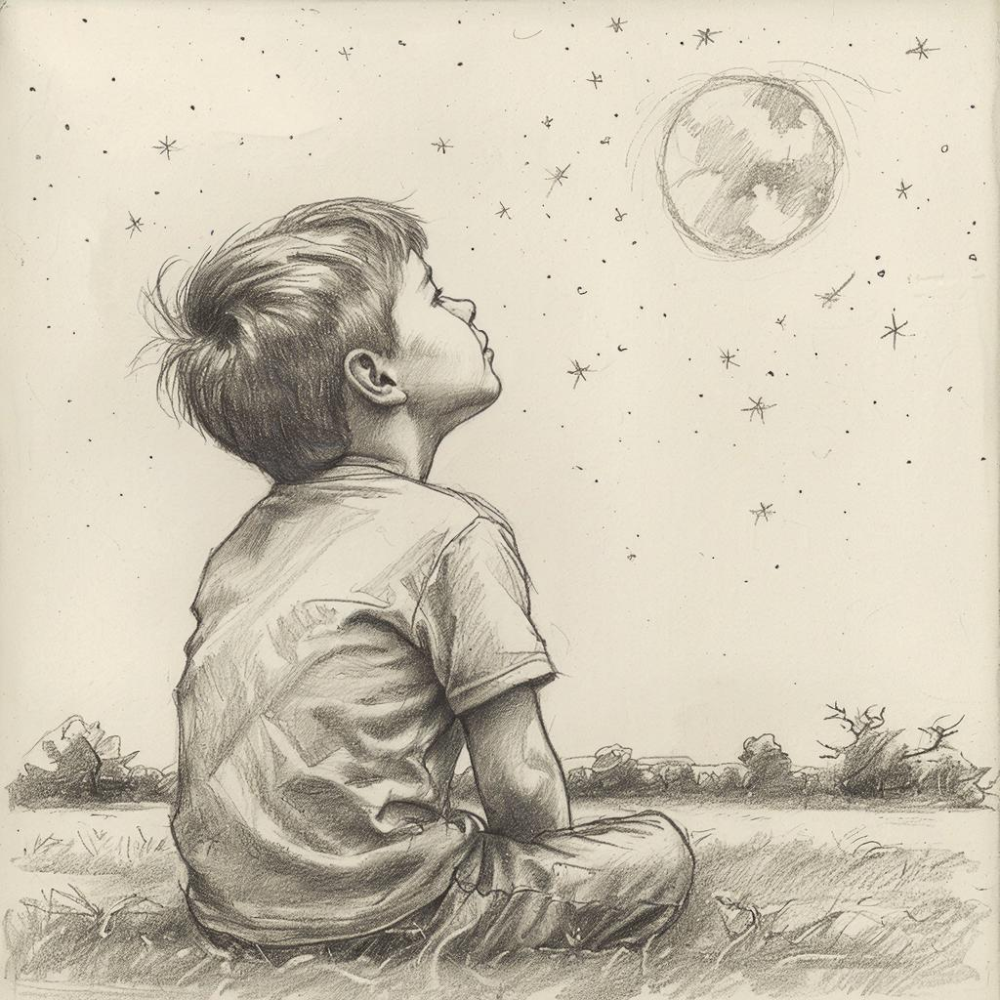
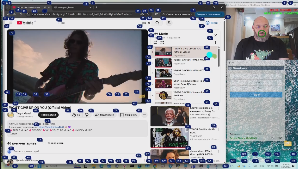
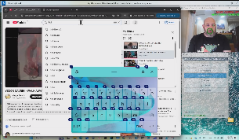
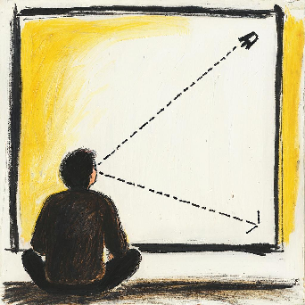
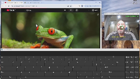
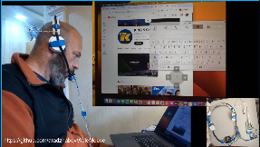
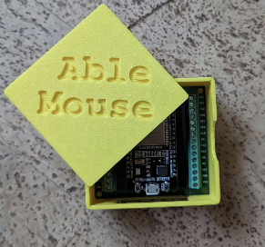
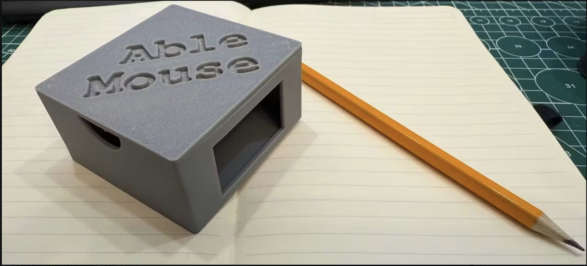
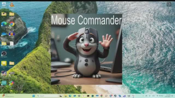

Digital Inclusion: My projects for people with severe motor impairments.
Due to personal circumstances, I deeply understand the challenges people face when they or their loved ones have limited access to the world due to physical or mental conditions.
AbleMouse - solutions for controlling a mouse and computer for people
with severe physical limitations, e.g., paralysis of the body and head.
Currently, AbleMouse consists of several separate products designed to assist users based on their individual physical capabilities. The table below helps navigate the available options. All products in the series have fully open-source code and instructions for setup and assembly.
The solutions are quite simple: their initial installation, assembly, and configuration can be done by local volunteers right in your city. It requires the competence of a tech-savvy junior student from a nearby university — just a basic level of programming and the willingness to figure it out.
Product Name |
Difficulties the person experiences |
What the person can use (which body part) |
Description |
Compatible OS |
AbleMouse Beyond Switch Edition |
Complete immobility of body and head |
Options: |
Allows control of the mouse, keyboard, and the computer in general. Providing voice control of the computer even for people without a voice and with complete paralysis. This is a more natural and flexible way compared to traditional switch control approaches, e.g., those implemented in Mac OS.   Details (description, instructions, source code, and video) |
Windows / potential operation on macOS (needs testing) |
AbleMouse AI Edition |
Complete immobility of the body |
Can turn and lower/raise head; eyes or mouth function |
The cursor is positioned where the nose points, and clicks are made with the eyes and mouth. Importantly, positioning is done by direction, meaning the screen can be very large, but the person doesn't need to move anywhere — just point their nose to the spot where they want the cursor to go.   Details (description, instructions, source code, and video) |
Windows / macOS / Unix/Ubuntu support possible — testing required |
AbleMouse DIY Edition |
Options:
|
Options:
|
Use cases:    Details (description, instructions, source code, and video) |
Windows, macOS, iOS, iPadOS, Unix (Ubuntu), Android |
AbleMouse MouseCommander |
- |
- |
Can be used together with the DIY Edition and AI Edition. Imagine a situation: you can control the cursor, but only in non-standard ways (e.g., with your eye) — WITHOUT a classic mouse, keyboard, and other standard input devices. Built-in Windows tools in such conditions are not very convenient. For example, to move the cursor from one corner of the screen to the opposite one, you still have to "drag" it all the way — there's no quick "teleport" method. At the same time, the system has many useful keyboard shortcuts and utilities that could greatly simplify the task. But how do you invoke them if you can't use a keyboard or other standard input methods? MouseCommander solves this problem.  Details (description, instructions, source code, and video) |
Windows |